Three years ago I got ratio'd on X/Twitter for a joke about chess.
At the time, 50+ comments calling you an idiot kinda felt like a lot.
Most of the replies either called me an idiot or pointed to some question about chess that nobody had answered. What is the best opening move? Can the game be proved a draw?
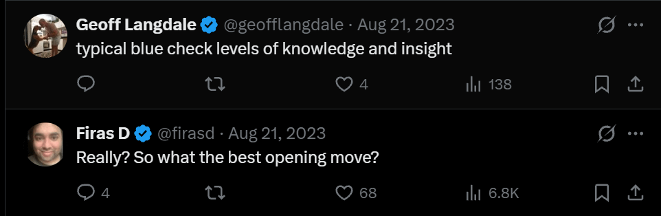
Fair enough. Chess has not been solved in the game-theoretic sense. That wasn't the sense I meant.
Magnus Carlsen put it more simply on Rogan in February 2025: ‘I have no chance against my phone.’ [1]
If the best human cannot reliably compete with the best engine, the contest is effectively over from the human's side. There can still be unanswered questions inside the game. I was talking about losing to the machine, not a proof of optimal play.
If you want a movie about that feeling, watch move 37 in AlphaGo, the 2017 documentary about DeepMind's match against Lee Sedol. In game two the machine puts a stone where no professional would expect it. Its policy network put the human probability at roughly one in ten thousand. Lee loses the game, then the match, 4 to 1. [2]
My reply guys would want you to know that Lee won game four. He did. It was a beautiful move. It also didn't restore human supremacy.
Math is next
Which, as you have been accustomed to by now, is a long way for me to introduce the notion that the machines are good at coding now, and may be on their way to beating us at much of mathematical problem-solving too.
By my count there are 37 dated milestones and announcements in the timeline below since DeepMind's cap set result in December 2023. Twenty-three are from July 2026 onward. Those are not 37 independently verified new theorems: the list includes contest results, formalizations of existing proofs, new results, disputed claims and the field's response.
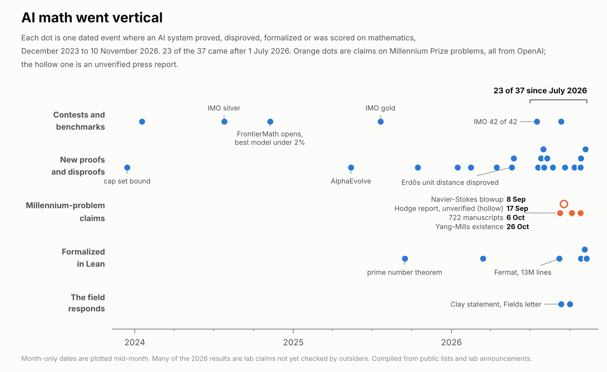
A machine took silver at the IMO in July 2024 and gold in July 2025. Since then the announcements have moved into research mathematics. Formalizing Fermat is a different achievement from discovering a new proof or settling an open conjecture; all three matter, but they shouldn't be counted as the same event.
Read the status column before getting too excited. A Lean file is evidence about a formal statement. Whether that statement matches the advertised problem, and which assumptions it uses, still matter.
Epoch has a cleaner view of performance on a common set of tests.
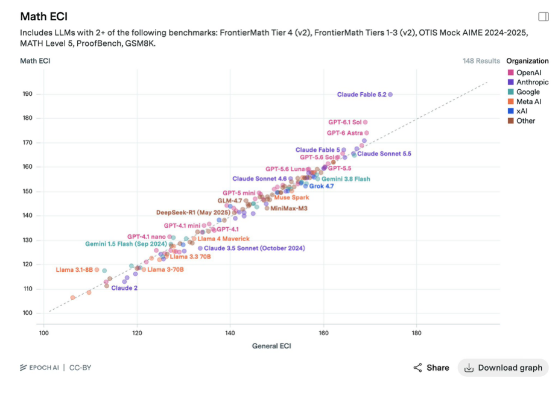
Most dots sit close to the diagonal. Some of the newest frontier models sit above it: their math benchmark performance is stronger than their general score would suggest. The two measures share benchmarks, so this is a comparison within Epoch's index, not an independent second test.
In September OpenAI announced a Navier-Stokes blowup proof under a smooth external force, together with a Lean formalization. Clay's September statement described the problem as ‘apparently’ settled while pointing to its evaluation process. The official problem allows forced breakdown alternatives: requiring a force does not, by itself, put a result outside the prize statement. If the announced proof holds and meets those conditions, it addresses a permitted version. That is different from saying independent evaluation is complete. [4]
I can think the machines are winning without treating every announcement as an accepted proof. In chess we can watch who wins. In mathematics we still have to check the statement and the proof.
How fast
Math is not the only measure moving. But the measures need to stay attached to what they actually test.
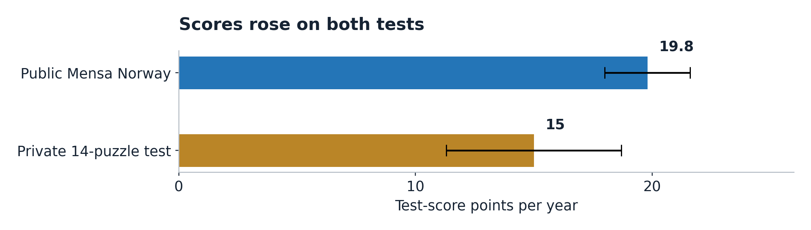
On the public Mensa Norway test, my fit is 19.8 test-score points a year. On TrackingAI's private 14-puzzle test it is 15.0. The public questions create a contamination risk; I don't know that they are in every model's training data. TrackingAI says its private questions have not been published. Neither test can tell us what happens after its score ceiling. [5]
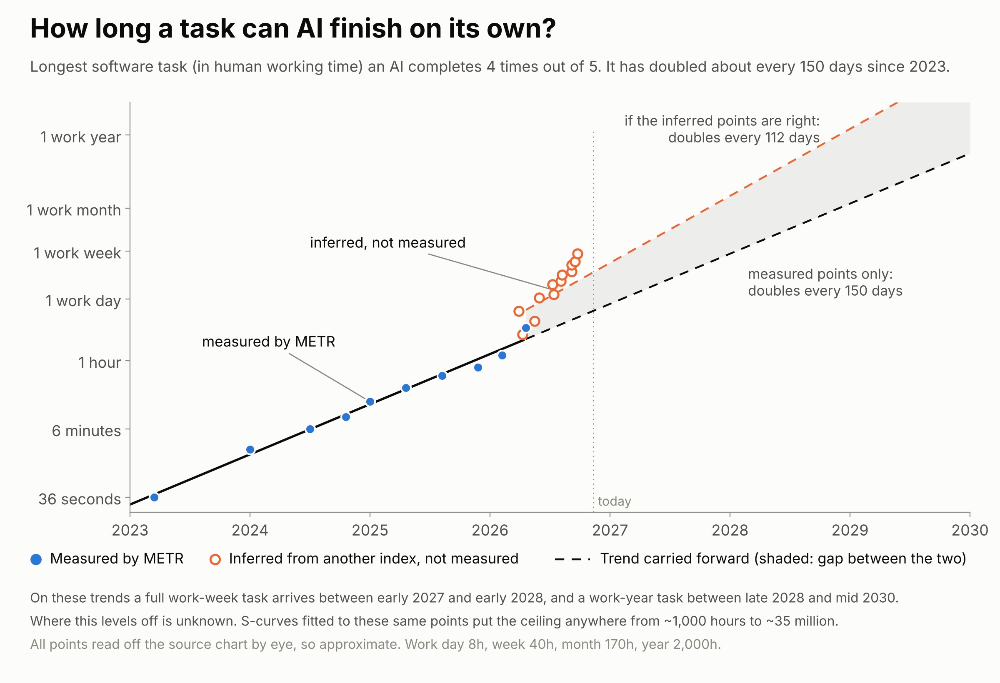
METR's 80% task horizon is the human-expert duration of a task that an agent is predicted to complete four times out of five. It measures performance on a particular software-task suite, not how long an agent runs or how much of an ordinary job it can take over. The measured trend in the chart doubles about every 150 days. [6]
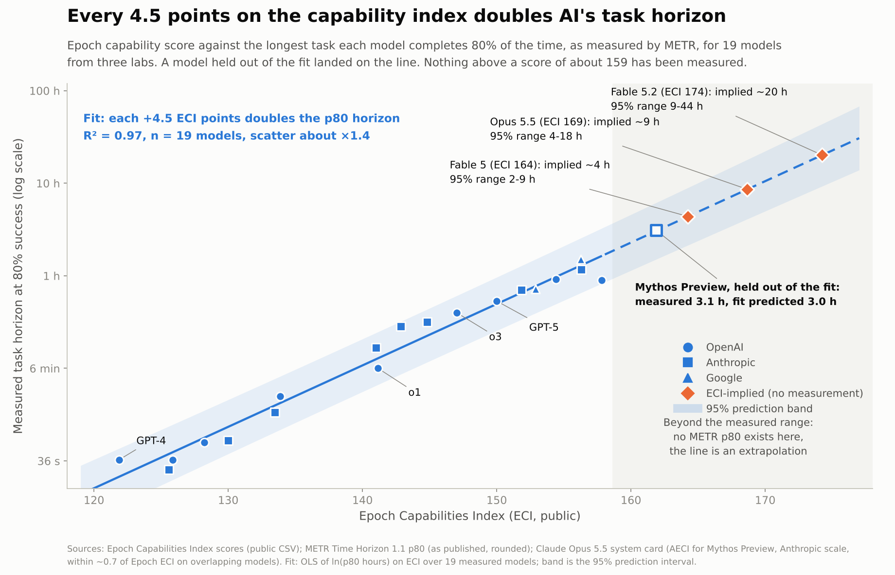
The latest model in that measured series was released in April and has an 80% horizon of about 3.1 hours. METR's page is now marked as no longer actively updated. Its documentation warns about saturation, task selection and limited evaluation coverage; I shouldn't turn that into a claim that measurement simply stopped because intelligence ran out of test. [6]
My fit maps each 4.5 ECI points to roughly a doubling of task horizon. It called the held-out model at 3.0 hours against 3.1 measured. Applied to the newer frontier model, it implies about 20 hours, with a fitted range of 9 to 44. That's an extrapolation from the capability index. A full work-week task in 2027 or 2028 is a conditional extension of those lines, not something METR has measured.
The open-weight data are moving too. At a fixed parameter count, later release years are associated with much higher ECI scores. That can make a capability cheaper to run or easier to fit in memory, but parameter count alone isn't a bill for inference. The size-and-year chart is in the appendix.
What solving chess got us
So say I'm right this time too. What did solving chess get us?
Directly? Nothing you can drop on your foot. Chess is still chess, people still play it, Carlsen still gets paid, and his phone still beats him.
Math is supposed to be different because math sits upstream of atoms. Maxwell's 1865 paper precedes Marconi's 1901 transatlantic experiment by 36 years. Compressed sensing moved from its 2006 foundations to commercial MRI clearances in 2017, about eleven years, and that was software on equipment we already had. These are examples, not an estimated average lag. I use twenty years as a window to play with. A new factory could take longer. [7]
And it annoyed me, when I built the thing below, how little the famous proofs show up on it. The closest row I have to Navier-Stokes is turbulence closure, and a blowup proof doesn't hand an airline a closure model. That field scores 3.2 on my ladder. Queueing and network flow scores 6.4. Using the unrounded scores, the gap is roughly 31 to 1 on my chosen scale. Riemann and Hodge don't have a row at all, because I couldn't draw a convincing line from either to something you can buy by 2046.
What it is worth
Almost impossible to estimate. How much is an equation worth? How about its solution?
But we can try.
Map the math to the problems it could help solve. Then extend the tree to a consequence in the human world: dollars, time saved, or DALYs. A DALY is one year of healthy life lost to disability or premature death; averting one saves a healthy year.
I built a thing for that, the Math-to-Atoms Ledger. Eighteen math fields on the left, sixty physical problems in the middle, ten outcomes on the right. The scores use my 1-10 log scale: each point is 3x, and today is a 3. Every score and connection is editable. [8]
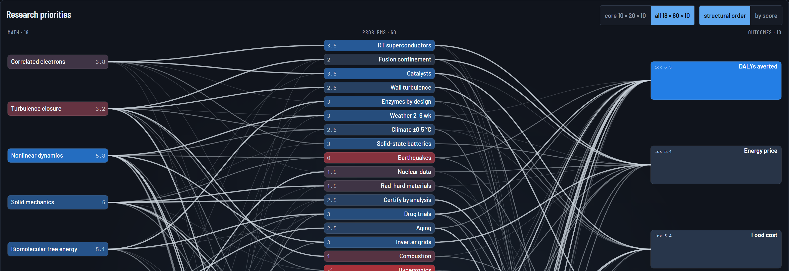
The graph sorts the research bets. The dollar calculation is separate. It starts with spending bases and three settings I choose: the share reached, the share that gets used, and the improvement where it is used.
| Setting or reference | Value |
|---|---|
| Share reached | 25% |
| Share that uses the improvement | 50% |
| Improvement where used | 40% |
| Combined improvement | 5% |
| Annual energy spending, assumed | $12T |
| Other production and logistics costs, assumed | $24T |
| Annual disaster-loss reference | $224B |
| Gross annual savings at the endpoint | $1.81T |
| Compared with assumed $120T nominal GDP | 1.51% |
At 50% reached, the answer doubles. I use 25% here. Neither is a measured share of the economy. To check the choice, I went back to the problem list.
Every problem has a score for the physical capability it needs, with today set to 3. Weight all sixty by my impact scores and 27% of the total sits at 3 or below. That means I judged the required physical capability to be available today. It doesn't mean deployment is free or that only a theorem remains. Five rows—superconductors, aging, catalysts, drug trials and fusion—hold 57% of the impact-weighted list, and all need capability beyond today's assigned level.
The uncomfortable bit is where that 27 comes from. On my original twenty problems the share was 2%. I used three LLM-generated lists to fill in what I'd missed. They added forty problems, and 36 of the 38 rows at or below today's capability are theirs. My list was miracle materials and theirs was water mains and wildfire tails. Either I have a blind spot for boring problems, or the models padded the board with things that sound tractable, and I can't tell you which from here.
So I use 25% as a scenario, checked against that list. The 27% is a share of selected, scored problems—not a spending-weighted estimate of addressable GDP. Half deployed in twenty years is another assumption. So is 40% better where it lands. The 40 is rich. Halve it and the answer halves.
I apply the same combined 5% to the different reference bases to compare their sizes. Energy, infrastructure and health will not improve at identical rates in practice. Each needs its own estimate of what can change, how much it changes and who adopts it.
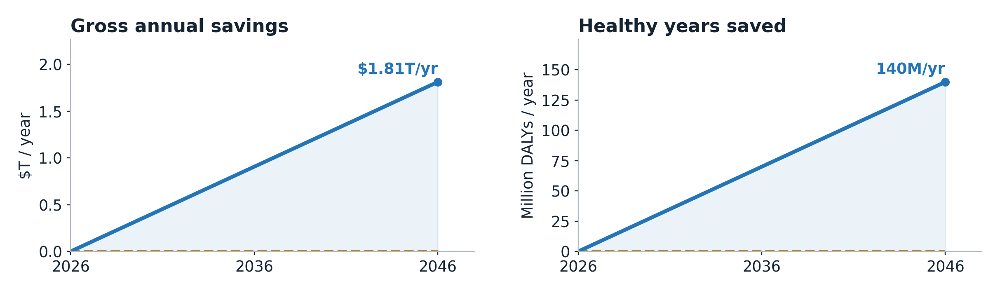
At the end of that transition the case saves about 140 million healthy life-years a year against the reference burden. The gross budget saving is $1.81T a year, before paying for the changes. That is the same size as 1.51% of a $120T economy. The $120T is a nominal-dollar yardstick I chose, not a forecast of world GDP in 2046.
| Over the 2026–2046 transition | Result |
|---|---|
| Annual savings reached in 2046 | $1.81T/yr |
| Average increase in that annual saving | $90.6B each year |
| Savings accumulated during the twenty years | $18.1T |
| Healthy years saved annually at the endpoint | 140M DALYs/yr |
| Healthy years saved over the transition | 1.40B |
Undiscounted totals under an even phase-in and fixed references. The final annual saving is not received from year one. Healthy years are separate from dollars, and energy is included in the dollar total once.
I set out to price all of math and got a point and a half out of these settings. What I actually priced was one case for making some existing activities cheaper. The difference matters.
One path to fuel savings
Take turbulence. Better models could help design a surface that creates less drag. Lufthansa reports roughly 1% fuel savings on aircraft fitted with AeroSHARK riblet film. That is an existing engineering result, not proof that a new theorem is necessary. [9]
IATA puts the 2025 global airline fuel bill at $252B. Suppose 10% of that bill is eligible, my scenario reaches 25% of the eligible opportunity, half of that gets used, and the fitted aircraft save 1% of fuel. This example uses the reported 1% local saving rather than the broad 40% setting above. [9]
| Step | Annual amount |
|---|---|
| Global airline fuel bill | $252B |
| 10% assumed eligible | $25.2B |
| 25% reached | $6.30B |
| 50% actually used | $3.15B |
| 1% fuel saving | $31.5M |
That gives $31.5M a year of gross fuel savings. The installation and program costs still have to come out. Better mathematics might improve the design or expand its reach; existing riblets alone don't establish either effect. This is what a path through the graph has to earn. The worked examples on the site stay separate from the aggregate so I don't count them twice.
A saving is not a growth rate
The first GDP chart sent me back to check the wiring. I had drawn savings on top of output and made them look like another GDP forecast. I took that line out.
A recurring saving can leave resources available for other uses. How much becomes additional output depends on costs, reinvestment, demand and what caused the lower price. Less fuel burned for the same flight is a resource saving. A lower fuel price caused only by lower producer margins can be a transfer between buyers and sellers. Those are different mechanisms.
The ledger doesn't estimate a net GDP multiplier. A one-time increase in the level of output would also be different from a permanent increase in its growth rate. Saving the same amount again next year preserves a benefit; a further increase in that benefit is what adds another step. I shouldn't turn the $1.81T into a growth forecast by relabelling it.
The first outside check was the prediction markets.
| Question | Where | Dated reading |
|---|---|---|
| OpenAI announces another Millennium solution by end-2027 | Polymarket | $1.25M volume; 52% · 11 Nov |
| Room-temperature, ambient-pressure superconductivity | Metaculus | Median Jun 2052 · 11 Nov |
| First 100 MW fusion electrical facility in service | Metaculus | Median Jul 2041 · 11 Nov |
| Ten-year average world-product growth exceeds 6% | Metaculus | Median Jun 2050 · 11 Nov |
Snapshots checked 11 November 2026; readings can move. Announcement, discovery, service and growth questions have different resolution rules. These are different forecaster pools, not one combined forecast. [10]
The gap is worth noticing even though the questions aren't interchangeable. The market is putting material odds on another announcement next year, while the superconductivity median is in the 2050s. A first material sample and a fleet of useful equipment are different milestones too.
Raise the available-capability threshold one point on my ledger and the share of the impact-weighted list below it goes from 27% to 60%. Two points takes it to 72%. Those are sensitivity checks on my ratings. They are not probabilities of deployment, and the price of reaching those engineering levels is missing.
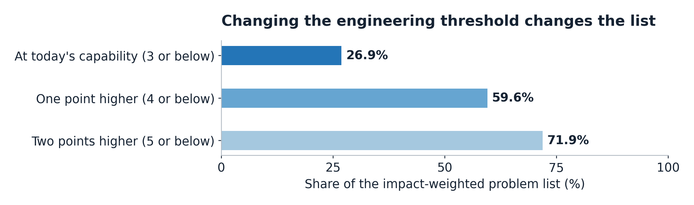
The missing loop
The second check was people who do this for a living. Acemoglu gets about 0.66% in total factor productivity over ten years. Penn Wharton gets 1.5% on the level of US GDP by 2035. Their scope and inputs differ from mine. The match with my 1.5 proves nothing. They use task exposure and cost-saving evidence; I have assigned spending bases and scenario settings. Sharing a multiplication sign doesn't validate my inputs. [11]
Epoch's GATE model includes a loop: output funds investment, which changes capability and automation, which changes output again. Its large growth paths depend on its assumptions; Epoch explicitly warns against reading the model's quantitative scenarios as its forecasts. My ledger has no such feedback. [12]
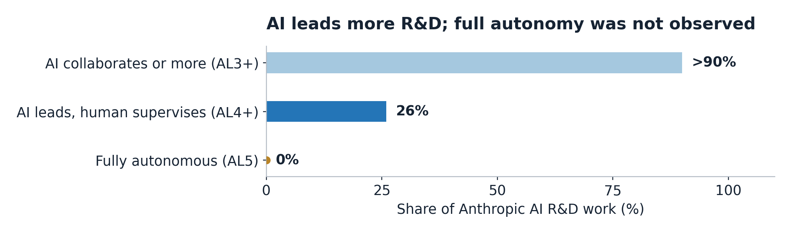
Anthropic reports that Claude led 26% of its R&D work in August, with a human supervising, and collaborated or more on over 90%. No measured subset was fully autonomous. That's evidence that the process of building the next model is changing. A curve reaching 95% full autonomy in November 2027 would be an extra assumption, not a measured trend in full autonomy. [13]
Nor does automating AI research show that a clinical trial or a factory can move at software speed. The physical loop would have to show up in cheaper experiments, faster testing, better equipment and more capacity. Those are the things the fixed capability scores leave out.
Give me 100% reached at the same 50% deployment and 40% gain, and the savings become $7.24T a year, about 6.04% of the yardstick economy. That's the top of this particular set of spending bases and settings. It is not a ceiling on mathematics.
A loop could keep improving existing processes, reinvest the savings or make equipment cheaper. It could also create entirely new things to buy. I have not priced those paths. The question is how much better mathematics changes the assumptions themselves over twenty years.
Is it really only energy
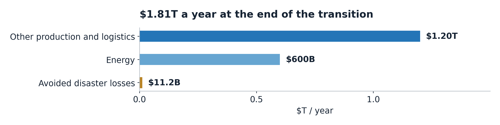
Energy is a third of the dollar line and that's my doing. I gave it a $12T spending base against $24T for other production and logistics, and hit both with the same 5%. That gives $600B and $1.20T a year, plus $11.2B in avoided disaster losses.
Go row by row and the list tells a different story. Only 9% of energy's impact-weighted links sit at today's capability, against 89% for infrastructure losses and 100% for capital held against risk. These are properties of the scored graph, not measured shares of those markets. They are another reason each sector needs its own reach and adoption estimate.
On my ratings, some earlier applications are in estimating wildfire losses or deciding which water main to dig up. Who keeps the benefit is a different question. A better wildfire model may help an insurer price a policy and help a customer shop it. Better pricing alone doesn't prevent a fire or establish an economy-wide resource saving.
Room-temperature superconductors are first on impact and 26th on priority. Fusion is fifth and 54th. Those rankings are judgments too, but the distinction is the point: a huge payoff and a useful next research bet need not be the same thing.
The health line stays outside the dollar total. The reference burden is about 2.80 billion healthy life-years lost a year; 140 million is 5% of that. Holding today's reference burden fixed is not a prediction of the actual burden in 2046. It also doesn't directly predict life expectancy: that would require age-specific mortality and disability calculations. [14]
For a valuation illustration, put $14,500 on a saved healthy year—roughly one year of output per person using the $120T yardstick and about 8.3 billion people. That would make 140 million healthy years worth about $2.03T. This is a chosen welfare valuation, not an accepted medical threshold or a check somebody receives. I keep it separate so the reader can choose the price without confusing it with GDP.
In the first draft of this I wrote move 42 instead of move 37. Wrong book. That's the one where they build a computer to answer everything, wait seven and a half million years, and get back a two-digit number nobody knows what to do with. And when they complain, the computer tells them to go build a planet.
Mine came back faster and with a decimal point: 1.5. Only this one changes when I move the sliders. Same advice though.
Anyway, I'm posting it again.
Play with the Math-to-Atoms Ledger
See you in the replies.
More charts: model size and release year
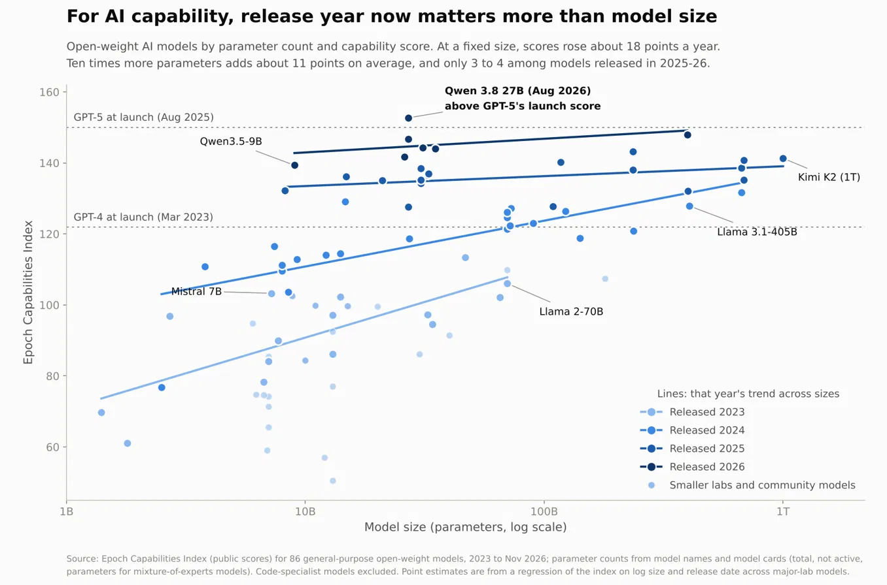
In this selected open-weight sample, a later release year is associated with higher benchmark capability at a given parameter count. The fitted year and size associations are not causal estimates. Model architecture, training compute, data, inference settings and selection into the sample can all differ. Parameter count also does not measure latency or inference cost by itself.
Timeline: 37 results and announcements
Thirty-seven entries, December 2023 to November 2026. This chronology includes new research, benchmark results, formalizations of known proofs and announcements about the field. Status describes the cited report; a lab claim or rumor is not an accepted proof. Chronology sources are listed after the main references.
| Date | Who | What | Status |
|---|---|---|---|
| 14 Dec 2023 | DeepMind FunSearch | New lower bound for the cap set problem | Nature |
| 17 Jan 2024 | DeepMind AlphaGeometry | 25 of 30 olympiad geometry problems | Nature |
| 25 Jul 2024 | DeepMind AlphaProof | IMO silver, 4 of 6 problems | graded by IMO judges |
| Nov 2024 | Epoch AI | FrontierMath launches, best model under 2% | benchmark |
| 14 May 2025 | DeepMind AlphaEvolve | 4×4 complex matrix multiplication, 49 steps to 48 | lab paper |
| 21 Jul 2025 | DeepMind, OpenAI | IMO gold, 5 of 6 problems | DeepMind officially graded |
| Sep 2025 | Math Inc (Gauss) | Strong prime number theorem | Reported Lean |
| Oct 2025 | GPT-5 Pro with Jang and Ryu | Open problem in convex optimization | human plus AI |
| Jan 2026 | Aristotle and GPT-5.2 Pro | Erdős problem 728 | Reported autonomous, Lean |
| Feb 2026 | DeepMind Aletheia | 6 of 10 FirstProof research lemmas | graded by experts |
| Mar 2026 | Math Inc (Gauss) | Formalization of sphere-packing proofs in dimensions 8 and 24 | Reported Lean, ~200k lines |
| Apr 2026 | GPT-5.4 Pro | Erdős problem 1196, prompted by a non-mathematician | autonomous |
| 20 May 2026 | OpenAI internal model | Erdős unit distance conjecture (1946) disproved | Reported expert checks |
| May 2026 | DeepMind AlphaProof Nexus | 9 Erdős problems, 44 OEIS conjectures | Reported Lean, later in Science |
| Jul 2026 | Huawei, Xiaohongshu, others | IMO perfect scores, 42 of 42 | developer-announced |
| 20 Jul 2026 | Claude Fable 5 (Alpöge, Mathew) | Jacobian conjecture counterexample, dimension 3 | Reported independent verification |
| 27 Jul 2026 | GPT-5.6 Sol (Jin) | Crouzeix's conjecture | Reported review by Crouzeix and others |
| 1 Aug 2026 | OpenAI GPT-6 Astra | Ten results, including a non-sofic group | Reported Lean |
| 3 Aug 2026 | GPT-5.6 Pro (Mazur) | Sendov's conjecture | Reported Lean, re-formalized by Tao |
| 10 Aug 2026 | Unreleased Claude (Sumner) | Zeta zeros on the critical line, 41.6% to 67.25% | Reported review by Lamzouri |
| 23 Aug 2026 | Claude (Alpöge) | Complex structure on the 6-sphere | claimed, contested |
| 7 Sep 2026 | Unreleased Claude | Formalization of Fermat's Last Theorem, reported 13M lines | Reported Lean formalization of known proof |
| 8 Sep 2026 | OpenAI internal model | Navier-Stokes blowup under forcing (Clay C and D) | Lean, lab claim, priority disputed |
| 11 Sep 2026 | Clay; 25 Fields Medallists | Clay calls it apparently settled. Medallists publish a letter on misalignment | Public statements; evaluation still pending |
| 11 Sep 2026 | OpenAI GPT-6 Astra | Last unsolved FrontierMath Tier 4 problem | Reported 97.6% on Tier 4 |
| 17 Sep 2026 | Report in The Information | OpenAI said to be close on Hodge | rumour, unverified |
| Sep 2026 | Epoch with GPT-6 Astra | Köthe conjecture disproved, Dittert conjecture proved | Reported Lean |
| 1 Oct 2026 | arXiv | Submissions capped at two a month | Public submission policy |
| 6 Oct 2026 | OpenAI | 722 manuscripts: quasi-Riemann, Hodge for CM abelian varieties, restricted BSD | Reported 42% in Lean, 3 withdrawn next day |
| Oct 2026 | Unreleased Claude (Alman, Vassilevska Williams) | Subquadratic 3SUM, subcubic shortest paths | Reported Lean |
| 26 Oct 2026 | OpenAI | Claimed Yang-Mills existence result, not the mass gap | withheld, Gross panel reviewing |
| 26 Oct 2026 | OpenAI | Claimed ETH disproof; local smoothing and Kakeya results | Lean, no outside confirmation yet |
| 27 Oct 2026 | Anthropic | Separate claimed disproof of the Exponential Time Hypothesis | preprint, unverified |
| 27 Oct 2026 | Axiom | Formalization of the classification of finite simple groups, reported 43M lines in 24 days | Reported Lean, found a false step in a 1986 paper |
| 4 Nov 2026 | Axiom | Reported Stacks Project formalization, about 15M lines | Reported Lean |
| 6 Nov 2026 | PSI on a non-public Anthropic model | Aaronson-Ambainis conjecture (2008), three days | Lean, statement match unconfirmed |
| 9 Nov 2026 | Claude Fable 5.2 | Fermat formalization in 30 hours with 1,000 agents; two black-hole results | Company report; supplied lemmas and proof-route sketch |
Sources and references
1. Carlsen on the Joe Rogan Experience, episode 2275, February 2025
Carlsen quotation transcript, approximately 1:42:22
2. AlphaGo film and match material, Google DeepMind
3. Epoch Capabilities Index and methodology
4. OpenAI Navier-Stokes announcement, 8 September 2026
Clay response, 11 September 2026
Clay official Navier-Stokes problem statement, Charles Fefferman
5. TrackingAI public and offline tests
6. METR time horizons and methodological cautions
METR sensitivity to modeling assumptions
7. Compressed sensing and MRI clearance, GE Healthcare
Maxwell, A Dynamical Theory of the Electromagnetic Field, 1865
Marconi Nobel lecture, account of the December 1901 tests
Frozen v029 implementation and calculation notes
9. IATA 2025 airline fuel bill, $252B
Lufthansa operational efficiency and AeroSHARK
10. Polymarket Millennium announcement contract
Metaculus room-temperature and ambient-pressure superconductivity
Metaculus first 100 MW fusion facility
Metaculus ten-year average world-product growth above 6%
11. Acemoglu, The Simple Macroeconomics of AI
Penn Wharton, projected generative-AI productivity effects
12. Epoch GATE model and interpretation limits
13. Anthropic R&D Automation Index, August 2026 snapshot
14. GBD 2023 disease and injury burden study
Chronology sources
Read each report with the status column. These counts describe selected entries, not the total output of mathematical research.
Wikipedia: List of mathematical discoveries made with artificial intelligence
George Coote: A rough timeline of LLMs in maths
Anthropic: Claude Fable 5.2 and Claude Mythos 5.2
Kingy: OpenAI 722 math manuscripts
ExplainX: OpenAI ETH, Kakeya and Yang-Mills claims
ExplainX: PSI Aaronson-Ambainis, claimed vs verified
CellCog: Axiom finite simple groups in Lean
BestHub: GPT-6 Astra and FrontierMath Tier 4
The Decoder: AlphaProof Nexus in Science
The Decoder: OpenAI reportedly close on Hodge
Let's Data Science: Erdős unit distance disproof
XenoSpectrum: IMO 2026 perfect scores
OfficeChai: Fields Medallists letter
Anthropic Fermat formalization account and supplied-input clarification
Fields Medallists declaration, Terence Tao, 11 September 2026
Want to challenge the numbers?
Explore the model →